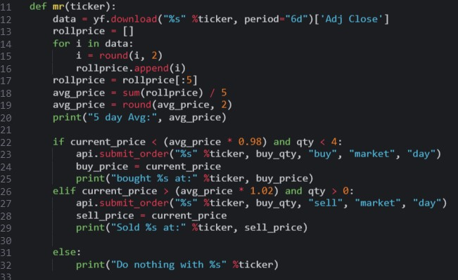
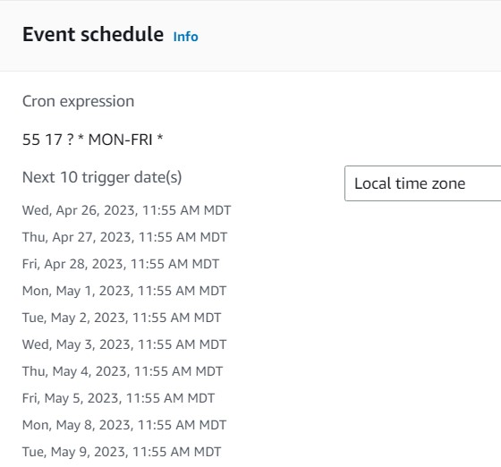

Algo-Trading!
I found my passion for Algo-Trading after I took an intro Python programming course at Utah State University.
My first step was to write a program that would run an mean reversion trading strategy on a five day moving average getting data from the Yahoo Finance module and using Alpaca as my broker.
The first challenges that I ran into in this phase were simply getting my program to function the way I wanted it to. The second problem was how to chose what stocks to trade and put into my program.
After a lot of trial and error to get my program running how I want it to, and a little research into
stocks that would perform well with MR strategy, I was up and running.
AWS servers are really cheap (especioally the t.2 micro that I am using) however as a broke college student, every dollar is important. So, in order to keep costs as low as possible, I decided to utilize AWS Lambda to start my instance 5 minutes before my Crontab runs. This, in conjunction with AWS option to shutdown my server after 30 mins of idle time saves a lot of money.
However the Lambda function is only equipt to turn on my instance (the way that I have it set up)
Intro cloudwatch events! AWS has another service where you can link two things based off of an event. For example, my cloud watch in plain english says "if its 1755 UTC time, then run this lambda function."
Overall, I learned a lot during this project and it was a great project to expose myself into some of the services that AWS has to offer, and the power of cloud computing!